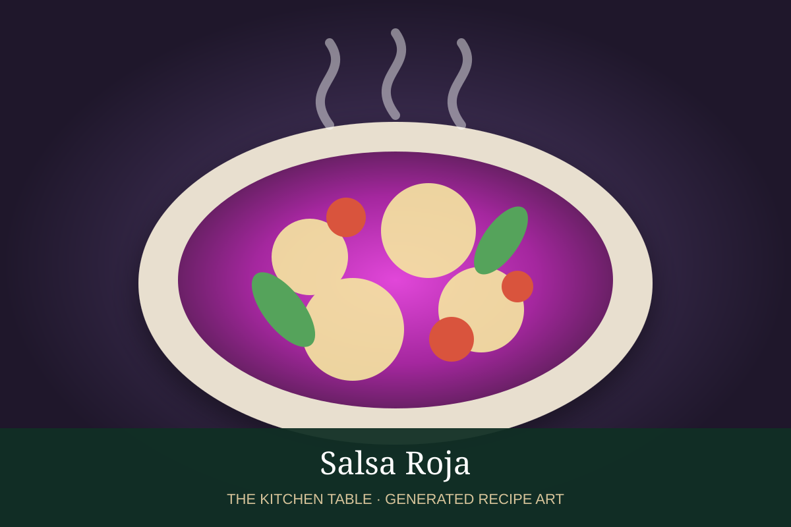

← Back to all recipes
BREAKFAST · MEXICAN
Chilaquiles Rojos
Crisp tortilla chips tossed in warm red chile sauce and topped with crema, queso fresco, onion, avocado, and eggs.
30 minServes 4

Photo: DiDi Food
Ingredients
- 8 cups sturdy tortilla chips
- 3 cups salsa roja
- 4 eggs
- 1/2 cup Mexican crema
- 3/4 cup queso fresco
- 1/4 white onion, sliced
- 1 avocado
- Cilantro
Preparation
- Warm salsa roja in a wide skillet.
- Add tortilla chips and toss briefly so some remain crisp.
- Divide onto plates.
- Top with fried eggs, crema, queso fresco, onion, avocado, and cilantro.
Related Mexican Recipes
Salsa Roja → · Frijoles Refritos → · Chilaquiles Verdes → · Huevos Rancheros →